FDE副業が「単発で終わりやすい」理由
AIツールの「最後の1マイル」——現場の業務フローに合わせてAIを設定・実装・定着させる役割を担うエンジニア職種。単なるAIツールの使い手にとどまらず、LLM APIの組み込み・RAGシステム構築・社内ツールへのAI機能追加などを実装レベルで担えることが求められる。2026年に企業のAI導入需要が急増したことで、スポット副業市場でも引き合いが急速に増加している。
FDE副業を始めたエンジニアからよく聞くのが「初案件は上手くいったのに、その後が続かない」という悩みです。スポット案件の性質上、一度完了すると発注者側に「次に依頼するタイミング」が生まれにくいのが原因です。
単発で終わりやすい典型的なパターン
- 成果物だけ納品して終了：動くツールを渡したが、発注者の担当者が社内で説明・活用できる状態になっていない。その後、使いこなせずに「一度やったけど定着しなかった」という評価になる
- 次ステップの提案がない：「これで完成です」と言い切ってしまうと、発注者は「次に何を依頼すればいいか」がわからなくなる。AI導入は段階的に改善するものなのに、フェーズ2の議論が生まれない
- 実績が外から見えない：案件を完了してもどこにも記録・公開されていないため、新しい発注者からの問い合わせや紹介が来ない。受注は常にプラットフォーム任せになる
- プロフィールが初回登録時のまま：案件をこなしても実績が更新されないため、マッチングアルゴリズムの精度が上がらず、同じレベルの案件しか来なくなる
これらの問題は、「技術力が足りない」のではなく「継続受注を生む動線を設計していない」ことが原因です。逆に言えば、この動線を意識して動くだけで同じスキルレベルでも受注量・収入が大きく変わります。
継続受注を生む3ステップ

ステップ1｜初案件で引き継ぎ資料と次ステップ提案を必ず納品に含める
FDE副業で継続受注につながる最大のポイントは、「納品物を渡して終わり」にしないことです。発注者の担当者が社内で成果物を使いこなせる・説明できる状態にしてこそ、初めてリピートにつながります。
継続受注を生む納品セットの例
- 引き継ぎドキュメント：「なぜこの設計にしたか」「どのパラメータを変更すると動作が変わるか」「月次API使用コストの目安」「よくあるエラーと対処法」を1枚のNotionページまたはMarkdownにまとめる。ドキュメントが丁寧なほど、担当者が社内で成功報告できる
- 短い使い方デモ動画：Loom等で3〜5分の操作解説動画を撮影して共有する。文字を読まなくても使い始められるため、現場スタッフへの横展開が早くなる
- 次フェーズの提案メモ：「現状フェーズ1が完了しました。フェーズ2としてこの機能を追加すると〇〇がさらに改善します。検討する場合はいつでも相談ください」と添える。担当者にとって「次に何を頼めばいいか」が明確になる
「今回は議事録AI自動化フェーズ1（文字起こし+要約）を完了しました。フェーズ2としてネクストアクションの自動抽出とAsana連携を追加すると、会議後の作業がほぼゼロになります。2〜3時間のスポット作業で追加可能なので、ご希望の際はお声がけください。」
こうした「次ステップ提案」は押しつけがましい営業ではなく、発注者にとって「このエンジニアに聞けば次の改善も提案してもらえる」という信頼の蓄積になります。スポット案件は単発ですが、信頼関係は累積します。
ステップ2｜案件実績をSNS・GitHubで可視化してリファラル流入を設計する
FDE副業で最も効率の良い受注拡大方法は「紹介」と「リファラル流入」です。スポット案件を完了した後に守秘義務の範囲内で実績を発信することで、「FDE副業を頼めるエンジニアを探している」という発注者から直接連絡が来る経路が生まれます。
実績発信の具体的な方法
- X（旧Twitter）・LinkedIn：「〇〇業界のAI導入支援スポット案件を担当しました。RAG構築で書類検索時間が80%削減できました」のように業界・成果指標を含めて投稿する。業界名とスキル名の両方を含めると検索流入が生まれる
- GitHub：案件で作成した仕組みを匿名化・汎用化したサンプルリポジトリを作成して公開する。「このリポジトリを参考に実装したい」という発注者から直接DMが来るケースがある
- Zenn・note・Qiita：「〇〇業界のAI導入でつまずいたポイントと解決策」というノウハウ記事を書く。技術的な深さのある記事は「この著者にFDE副業を頼みたい」という信頼形成に直結する
- 発注者からの紹介を促す：案件完了時に「同じ課題を持つ知り合いの企業がいれば紹介してもらえると嬉しいです」と一言添える。人伝えの紹介は成約率が高く、単価交渉もスムーズになる
大切なのは「守秘義務を守りながら発信できる粒度」を見極めることです。クライアント名・具体的な金額・機密業務内容は伏せる。一方で「〇〇業界×〇〇ツール×成果指標（〇%削減・〇分短縮等）」は発信可能な範囲で積極的に言語化します。
ステップ3｜ANKENのプロフィールを実績ベースで更新しマッチング精度を上げる
案件を完了するたびにANKENのプロフィールを更新することが、継続受注の「地盤」を作ります。初回登録時のプロフィールは「これからできること」の羅列になりがちですが、案件実績が積まれるほど「実際にやった業界・業務・技術スタック」の具体性が増し、発注者の「まさに求めていた」マッチングが起きやすくなります。
プロフィール更新のポイント（案件完了ごとに追記）
- 対応業界の追記：「医療・介護、製造業、EC・小売」のように実際に案件を担当した業界をリスト化する
- 使用技術スタックの更新：案件で使ったLLMモデル・フレームワーク・外部ツール（OpenAI API, LangChain, kintone, n8n, Vercel 等）を追記する
- 成果指標の明記：「議事録作成時間を90分→5分に短縮」「書類処理エラー率を80%削減」など定量的な成果を記載する。発注者の信頼感が大幅に向上する
- 稼働可能条件の精緻化：「週末2〜4時間のスポット稼働が中心、急ぎ案件は平日夜対応可」のように実態に合わせて稼働条件を更新する
案件完了ごとに更新（月1〜2回程度）が理想。特に「対応業界」と「成果指標」は毎回必ず追記する。3件の完了実績が積まれると、プラットフォーム上での検索マッチング精度が大幅に上がる。

3ヶ月で月10万円を目指す受注ロードマップ
FDE副業をゼロから始めて3ヶ月で月10万円の継続受注を実現するための現実的なロードマップです。
1ヶ月目：初案件受注と「継続の種」を植える
- ANKENに無料登録してプロフィールを充実させる（技術スタック・対応業界・ポートフォリオリンク）
- 初案件（タスク単位・2〜5時間程度）を受注して完了する
- 引き継ぎドキュメント・使い方デモ・次フェーズ提案を納品物に含める
- 案件実績（匿名化・守秘義務を守った形）をSNS・GitHubに発信する
- 初月の目安収入：2〜5万円（案件1〜2件）
2ヶ月目：リピート受注と実績の蓄積
- 1ヶ月目の発注者からフェーズ2依頼が入る（次ステップ提案が機能するタイミング）
- 新規案件1〜2件を並行受注する
- プロフィールを1ヶ月目の実績ベースで更新する
- Zenn・noteにノウハウ記事を1本投稿する
- 2ヶ月目の目安収入：5〜10万円（案件2〜4件）
3ヶ月目：紹介流入と安定受注体制の確立
- 2件以上の完了実績が積まれ、発注者からの紹介・SNSからの問い合わせが発生し始める
- ANKENのマッチング精度が上がり、スキルに合致した高単価案件の紹介が増える
- 月2〜4案件の安定受注が定常化し始める
- 3ヶ月目の目安収入：10〜20万円（案件3〜6件、時給5,000〜10,000円換算）
・LLM API接続・RAG構築・社内ツールへのAI機能追加のいずれかが実装できるレベルであること
・週末2〜4時間程度のスポット稼働が可能なこと
・プロフィール・実績発信を案件完了ごとに更新し続けること
※収入は案件単価・稼働時間・スキルレベルによって大きく異なります
ANKENでFDE副業案件を継続受注する流れ
ANKENはAI開発・システム開発・AI導入支援のスポット外注に特化したマッチングプラットフォームです。FDE副業のスポット案件も多数掲載されており、週1日・土日・タスク単位での副業受注が可能です。
- 無料登録（5分）：氏名・連絡先・スキルの概要を登録する。審査は原則当日〜翌営業日以内に完了
- プロフィール入力（15〜30分）：技術スタック・対応できる業界・ポートフォリオへのリンク・稼働可能な時間帯を入力する。詳細なプロフィールほどマッチング精度が上がる
- 案件マッチング・紹介：条件に合う案件が発生した際にANKEN担当者からご連絡。週1〜2件のペースで案件情報が届くエンジニアが多い
- スポット稼働・納品：土日や平日夜間など自分のペースで稼働し、タスク単位で成果物を納品する
- 報酬受取・実績更新：月次精算で報酬を受け取り、完了実績をプロフィールに追記する
継続受注を狙うなら、ANKEN担当者との関係性も重要です。案件完了後に「今後はこの業界のAI案件を中心に受けたい」「最近こういう実装をやり始めた」と担当者に伝えると、次の案件マッチング精度が格段に上がります。担当者は複数の案件情報を把握しており、エンジニアの強みを理解しているほど適切な案件を優先的に紹介できます。
よくある質問
- Q. FDE副業の継続受注はどれくらいの期間で安定しますか？
- A. 初案件完了後、継続受注の動線（引き継ぎ資料・次提案・実績発信）を実践すれば3〜6ヶ月でリピートと紹介が安定し始めます。月2〜4件の安定受注は3件の完了実績が目安です。
- Q. 副業規定がある会社員でもFDE副業は始められますか？
- A. スポット案件は「タスク単位の業務委託」として依頼が来ることが多く、副業禁止規定がある場合でも会社に許可を取りやすい形態です。ただし副業規定がある場合は事前に確認してください。
- Q. 実績がない状態でプロフィールを充実させるにはどうすればいいですか？
- A. 自主制作のサンプル実装（RAGデモ・ChatGPT API連携ツール等）をGitHub・Vercelで公開してポートフォリオリンクに追加するのが最速の方法です。動くデモがあると発注者の信頼感が大幅に上がります。
まとめ
FDE副業のスポット案件を継続受注するために重要な3つのステップは、①初案件で引き継ぎ資料と次フェーズ提案を納品物に含める、②案件実績をSNS・GitHubで守秘義務の範囲内で可視化してリファラル流入を設計する、③案件完了ごとにプロフィールを実績ベースで更新してマッチング精度を上げる、です。
スポット案件は「単発で完結する」という印象がありますが、FDE副業の場合はむしろ「AI導入は段階的に改善するもの」という性質上、フェーズを分けた継続的な関係構築が自然な形になります。技術力を上げるのと並行して「継続受注を生む動線」を意識して動くことで、同じスキルレベルでも収入と安定度は大きく変わります。まずはANKENに無料登録して、第一歩を踏み出してみてください。